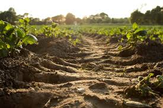

Soil Erosion
Soil erosion is the wearing away of topsoil vital for crops and biodiversity.

About
Water, wind, and human actions remove fertile topsoil. It leads to reduced productivity, sedimentation of rivers, and increased disaster risks. Sustainable agriculture and vegetation cover are key defenses.